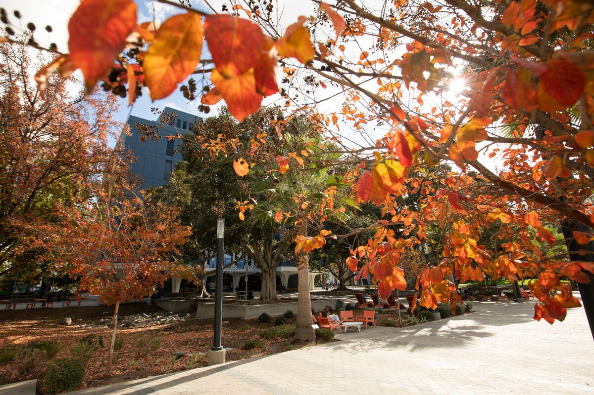

City & county
Management analyst, budget analyst, city manager track

Master of Public Administration
36 units. Evening and hybrid classes for professionals in government, nonprofits, and public agencies.
Management analyst, budget analyst, city manager track
Program director, development officer, operations lead
Public health administrator, contracts and grants manager
Agency administration, planning, emergency management
Campus and district operations, student affairs
Water, transit, parks, regional planning and policy
Core coursework · 21 units
Human Resources · Public Finance · Local Government · Public Policy
Units
36
Format
Evening & hybrid,
professional-friendly
Apply by · 2026–27
Fall — May 1
Spring — Nov 15
Part-time tuition 2026–27
$2,480 / term
CA resident, 6 units · plus campus fees